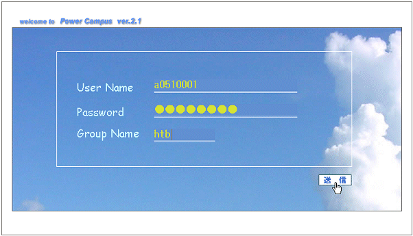
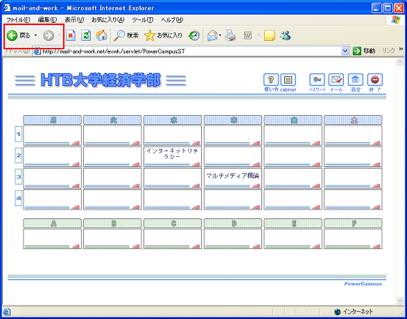
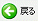
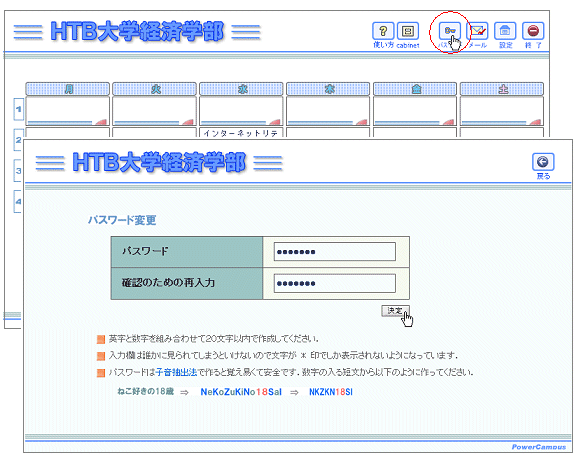
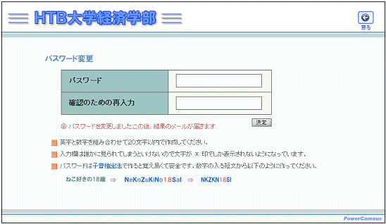
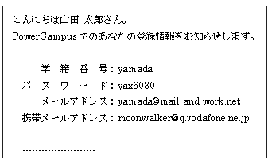

初めてのログイン
ログインとパスワードの変更
初回のログインでは，
ユーザー名もパスワードも，共に
学籍番号
を入力します．ログインした後で，パスワードを変更してください．また，グループ名は，所属学部によって異なるので担当教師の指示に従ってください．
ユーザー名，パスワード，グループ名を入力して をクリックする．

※グループ名は，所属学部ごとにつける名称です．上記のhtbは例示ですからこのまま入力してはいけません．
下に示す時間割画面が表示されればログインできたと言うことになります．

【
重要な注意
】 これから以後は，
図の赤枠で示した

をクリックしては
いけません
．
これから後の，ほとんどの画面に，左に示す専用のボタンが表示されています．前の画面に戻るには，必ずこのボタンを使ってください．
パスワードボタンをクリックしてパスワードを変更する
パスワードボタンをクリックすると，パスワード変更画面が開きます．変更したいパスワードを上下の枠の中に書き込み，
をクリックします．

変更が受け付けられると「
パスワードを変更しました．この後，結果のメールが届きます
」という表示がでます．
実際に送られてくるメールは以下のような登録情報です．なくさないように保管して下さい．



 をクリックします．
をクリックします．
 ログインとパスワードの変更
ログインとパスワードの変更